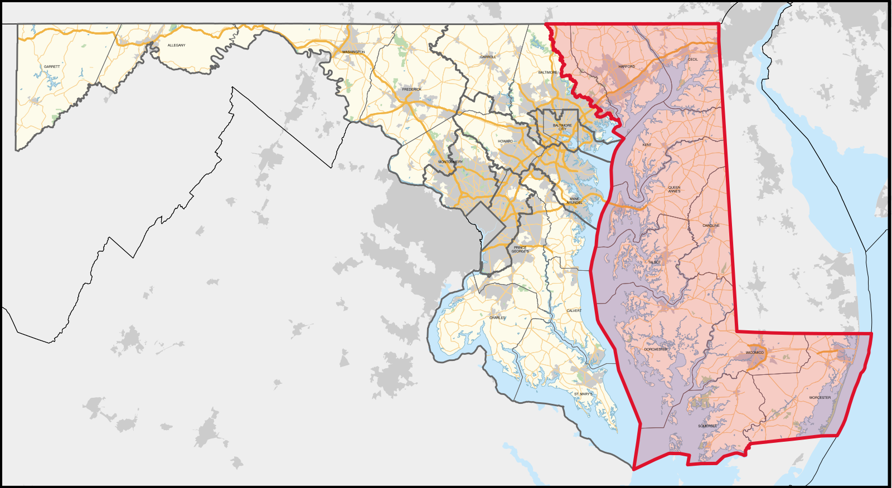

Norman Bauer
vitals {
org: "The ZIP Apportionment Initiative",
url:"https://zipinit.org/",
contact_signal: "Use Signal Messenger: @zipinit.12",
git: "https://github.com/simulacra10/zipinit"
}
The farther the representative is from the people, the weaker the representation becomes.
43,810 people
| ZIP | Area | Pop. | ZIP | Area | Pop. | ZIP | Area | Pop. |
|---|---|---|---|---|---|---|---|---|
| 20906 | Silver Spring | 70,595 | 21061 | Glen Burnie | 57,230 | 21224 | Baltimore | 47,465 |
| 21234 | Parkville/Baltimore | 66,334 | 20744 | Fort Washington | 54,441 | 21207 | Baltimore/Gwynn Oak | 47,099 |
| 20878 | Gaithersburg | 66,115 | 20772 | Upper Marlboro | 54,319 | 21229 | Baltimore | 46,679 |
| 21740 | Hagerstown | 64,792 | 20902 | Silver Spring | 54,261 | 20910 | Silver Spring | 45,943 |
| 20874 | Germantown | 62,738 | 20774 | Bowie | 51,816 | 21921 | Elkton | 45,527 |
| 21122 | Pasadena | 61,566 | 20854 | Potomac | 50,498 | 21044 | Columbia | 44,114 |
| 21117 | Owings Mills | 60,816 | 20850 | Rockville | 50,353 | 21218 | Baltimore | 44,014 |
| 21222 | Dundalk | 59,407 | 20783 | Hyattsville | 50,333 | 21221 | Middle River | 43,487 |
| 21702 | Frederick | 49,605 | 21042 | Ellicott City | 43,327 | |||
| 20852 | Rockville | 48,180 |
District #1 - Andy Harris
